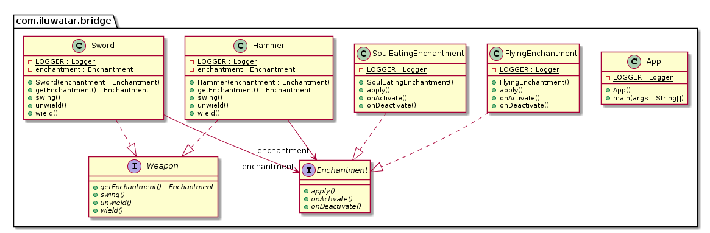

桥接模式UML类图 
桥接模式java实现 public interface Enchantment void onActivate () void apply () void onDeactivate () } public interface Weapon void wield () void swing () void unwield () Enchantment getEnchantment () ; } public class Sword implements Weapon private static final Logger LOGGER = LoggerFactory.getLogger(Sword.class ) ; private final Enchantment enchantment; public Sword (Enchantment enchantment) this .enchantment = enchantment; } @Override public void wield () LOGGER.info("The sword is wielded." ); enchantment.onActivate(); } @Override public void swing () LOGGER.info("The sword is swinged." ); enchantment.apply(); } @Override public void unwield () LOGGER.info("The sword is unwielded." ); enchantment.onDeactivate(); } @Override public Enchantment getEnchantment () return enchantment; } } public class Hammer implements Weapon private static final Logger LOGGER = LoggerFactory.getLogger(Hammer.class ) ; private final Enchantment enchantment; public Hammer (Enchantment enchantment) this .enchantment = enchantment; } @Override public void wield () LOGGER.info("The hammer is wielded." ); enchantment.onActivate(); } @Override public void swing () LOGGER.info("The hammer is swinged." ); enchantment.apply(); } @Override public void unwield () LOGGER.info("The hammer is unwielded." ); enchantment.onDeactivate(); } @Override public Enchantment getEnchantment () return enchantment; } } public class SoulEatingEnchantment implements Enchantment private static final Logger LOGGER = LoggerFactory.getLogger(SoulEatingEnchantment.class ) ; @Override public void onActivate () LOGGER.info("The item spreads bloodlust." ); } @Override public void apply () LOGGER.info("The item eats the soul of enemies." ); } @Override public void onDeactivate () LOGGER.info("Bloodlust slowly disappears." ); } } public class FlyingEnchantment implements Enchantment private static final Logger LOGGER = LoggerFactory.getLogger(FlyingEnchantment.class ) ; @Override public void onActivate () LOGGER.info("The item begins to glow faintly." ); } @Override public void apply () LOGGER.info("The item flies and strikes the enemies finally returning to owner's hand." ); } @Override public void onDeactivate () LOGGER.info("The item's glow fades." ); } } public class App private static final Logger LOGGER = LoggerFactory.getLogger(App.class ) ; public static void main (String[] args) LOGGER.info("The knight receives an enchanted sword." ); var enchantedSword = new Sword(new SoulEatingEnchantment()); enchantedSword.wield(); enchantedSword.swing(); enchantedSword.unwield(); LOGGER.info("The valkyrie receives an enchanted hammer." ); var hammer = new Hammer(new FlyingEnchantment()); hammer.wield(); hammer.swing(); hammer.unwield(); } }
应用场景 JDBC是桥接模式的典型实现。 先看下类图：
Class.forName("数据库类驱动器" ); Connection conn = DriverManager.getConnection("数据库url" , "用户名" , "密码" );
针对不同的数据库，JDBC都可以通过java.sql.DriverManager类的静态方法getConnection(数据库url, 用户名, 密码)来获取数据库的连接。JDBC通过DriverManager对外提供了操作数据库的统一接口getConnection，通过该方法可以获取不同数据库的连接，并且通过Connection类提供的接口来进行数据的查询操作。
JDBC为不同的数据库操作提供了相同的接口，但是JDBC本身并没有针对每种数据库提供一套具体实现代码，而是通过接口java.sql.Driver的connect方法连接到了不同的数据库实现。
public interface Driver public abstract Connection connect (String s, Properties properties) throws SQLException }
在JDBC中，针对不同数据库提供的统一的操作接口通过java.sql.Driver（桥）连接到了不同的数据库实现。如连接mysql数据库。
package com.mysql.jdbc;public class NonRegisteringDriver implements java .sql .Driver //对java .sql .Driver 接口提供了实现public Connection connect (String url, Properties info) throws SQLException { } }
Java在连接MySQL时需要使用mysql-connector-java.jar，mysql-connector-java.jar包提供了对MySQL数据库操作的具体实现，并通过接口Driver连接到了JDBC统一的api。
public class DriverManager private static final CopyOnWriteArrayList registeredDrivers = new CopyOnWriteArrayList(); public static synchronized void registerDriver (Driver driver) throws SQLException { if (driver != null ) registeredDrivers.addIfAbsent(new DriverInfo(driver)); else throw new NullPointerException(); println((new StringBuilder()).append("registerDriver: " ).append(driver).toString()); } private static Connection getConnection (String s, Properties properties, Class class1) throws SQLException { Iterator iterator = registeredDrivers.iterator(); do { if (!iterator.hasNext()) break ; DriverInfo driverinfo = (DriverInfo)iterator.next(); if (isDriverAllowed(driverinfo.driver, classloader)) try { Connection connection = driverinfo.driver.connect(s, properties); if (connection != null ) { return connection; } } catch (SQLException sqlexception1) { if (sqlexception == null ) sqlexception = sqlexception1; } } while (true ); } }
从DriverManager.getConnection()源码可见，方法中遍历了包含DriverInfo实例的表registeredDrivers，通过表中实例driverinfo来获取封装的java.sql.Driver类型的实例，并调用java.sql.Driver接口的connect方法获取到Connection。注：DriverInfo是Driver的封装类。由DriverInfo源码可见。
class DriverInfo DriverInfo(Driver driver1) { driver = driver1; } public boolean equals (Object obj) { return (obj instanceof DriverInfo) && driver == ((DriverInfo)obj).driver; } public int hashCode () { return driver.hashCode(); } public String toString () { return (new StringBuilder()).append("driver[className=" ).append(driver).append("]" ).toString(); } final Driver driver; }
那么，Driver实例是何时注入到DriverManager类的registeredDrivers中的呢？以mysql为例，在每次使用JDBC连接mysql时，都会有下面的调用：
package com.mysql.jdbc;public class Driver extends NonRegisteringDriver implements java .sql .Driver public Driver () throws SQLException { } static { try { DriverManager.registerDriver(new Driver()); } catch (SQLException E) { throw new RuntimeException("Can't register driver!" ); } } }
在com.mysql.jdbc.Driver的源码中可以看到在加载com.mysql.jdbc.Driver类时，通过类中的静态域中的红色代码，会调用DriverManager的registerDriver方法将当前MySQL的驱动类实例注入到DriverManager的registeredDrivers中。
通过整个代码调用，展示了桥接模式在JDBC中是如何运用的。